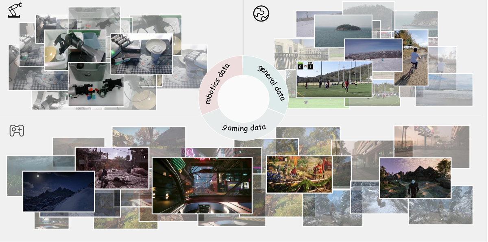
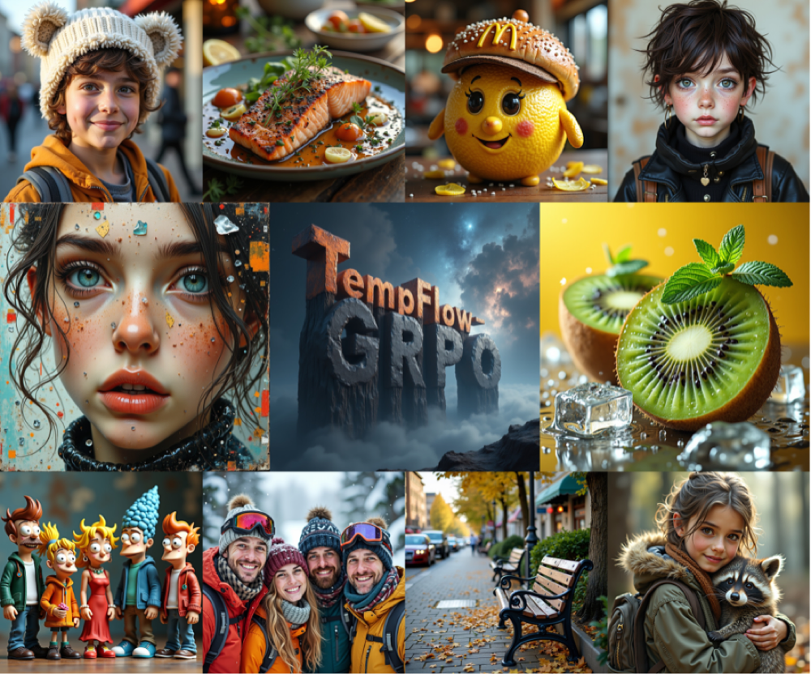

I am a first-year Master's student at ZIP Lab (Zhuang Intelligent Processing Lab), Zhejiang University. I earned my B.Eng. in Software Engineering at Zhejiang University in 2026.
My research interests include Agents, World Models, and Multimodal understanding and generation. I am particularly interested in how world models can be evaluated faithfully and how they can serve as environments for training capable agents.
Feel free to reach out if you'd like to discuss research or collaborate.
News
- 2026.09 Started my Master's at Zhejiang University, ZIP Lab.
- 2026.06 WorldOlympiad released on arXiv.
- 2026.06 Received my B.Eng. in Software Engineering from Zhejiang University.
- 2026.01 TempFlow-GRPO accepted by ICLR 2026.
Research
World Models
Evaluating whether world models truly obey physics, geometry and interaction — not just look good.

WorldOlympiad: Can Your World Model Survive a Triathlon?
First Author Preprint
A triathlon-style benchmark built from 1,000 long videos that diagnoses video world models on physical faithfulness, geometric consistency and interaction fidelity, revealing systematic failure modes across 8 state-of-the-art pipelines.
Multimodal Generation
RL alignment for generative flow models.

TempFlow-GRPO: When Timing Matters for GRPO in Flow Models
ICLR 2026
A temporally-aware RL framework for flow-matching models, using trajectory branching and noise-aware weighting for stabler alignment.
Open-Source Projects
OpenWorldLib: A Unified Codebase and Definition of Advanced World Models
Contributor
A unified, extensible codebase for advanced world models from the OpenDCAI community, standardizing model definitions, training and evaluation across fragmented world-model research.
Education
-
 Zhejiang University — Master's Student, ZIP Lab Sep 2026 – Present
Zhejiang University — Master's Student, ZIP Lab Sep 2026 – Present
-
Zhejiang University — B.Eng. in Software Engineering Sep 2022 – Jun 2026